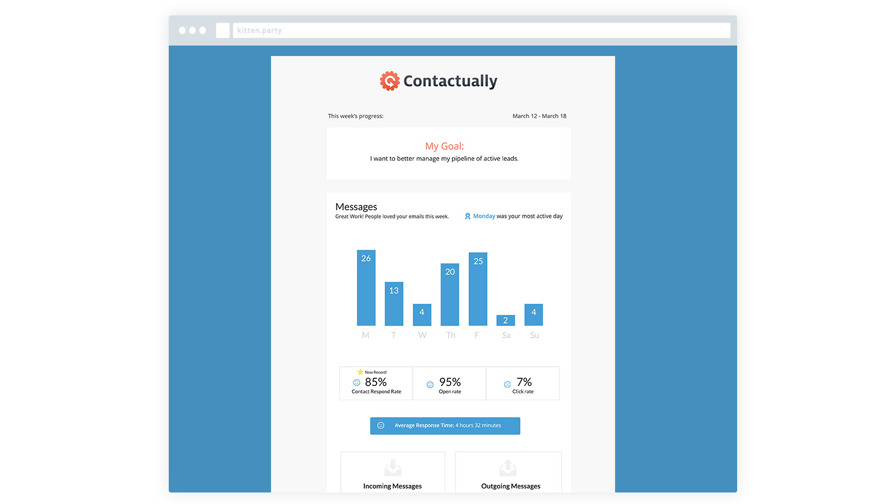

gonna try with a little help from my friends
Contactually CRM
-

-

- 
The backstory
Contactually is a CRM (customer relationship manager) that works this way:
- Users import contacts from emails and social network accounts
- The user tells the system how often they would like to be reminded to stay in touch with each person
- Contactually reminds users when they need to talk to certain people and then makes it easier to send bulk messages. Voila!
A few things set it apart from some of the big guys like Salesforce including:
- Price
- Ease-of-use
- Approachability and authenticity of communication
The product had recently been redesigned but the business was having trouble with user engagement and had higher than high churn rate.
My goal with the design was to play up its strengths and tailor the product to the ideal customer.
It’s no surprise that I have never been in sales. As a designer, I spend most of my days sitting in front of my computer or in front of a white board. Managing contacts had never been part of my duties. So I needed to get in the trenches and learn what sales is all about. First, I needed to find our ideal customers and then figure out what they really needed to make their job easier for them.
Drew's Role
The Process
Because I am NOT the user, getting in and understanding the problem from real users was the number one priority.
I was fortunate that many analytics and communication tools were already in place including Mixpanel and Intercom.io to give me a whole wealth of information including the very valuable cohort data.
But there was a big problem: the qualitative data wasn’t adding up. Metrics that should have been the same across analytics tools, were telling wildly different stories. My head was spinning. What numbers should I be looking at to give the full picture?
This was a classic case of information overload.
I decided on this plan of attack:
- Pick a few KPIs to watch and track, not dozens.
- Figure out the data mismatch problem
- Start interviewing users
User Research
I started by talking to three groups of users:
- Very active power users
- Middle-of-the-road users
- Those who looked likely to cancel (signed up but never used again)
Findings
After those conversations (and some with the customer success team), I learned many users were natural connectors, loved people, but were simply overwhelmed. Their business lives were hectic, they had huge lists of contacts they had carried over the years and from job to job in many different places including a variety of emails, social networks, business cards, etc.
- Focus on building user trust
- Clarify the product’s value in the application
- Celebrate our user’s success
Contactually was being trusted with the livelihoods of these people. There was no room for error in our system and our user’s confidence in us was the key to holding onto them for the long run.
Contactually did a great job of getting leads and converting them to users. The product did less of a stellar job of helping them after they had signed up. We needed to sell them in-app on how we could improve their lives by simplifying the experience and onboarding process.
I had learned that sales is a game of numbers and many of our users liked feeling successful. In general, making money was a primary motivator and marker of success. We needed to show our users how they were succeeding and then celebrate the big wins with them.
The results
The most difficult part was where to start because there were quite a few places within the experience that needed work. So I had to triage by using the User Hierarchy of Needs (above) and designed some “quick fixes” that could be implemented relatively easily.
Next up: Determine the Product Tone and Voice
I met with department heads to figure out how we could present a unified voice for our product. During a very productive two-hour brainstorming session, we compiled product tone and voice guidelines to be used company wide through all outside communications.
Since the best part of product was the people who made it all possible, we decided to channel a bit of a silly, humorous energy into our product to lighten the stiff tone.
To create happy users: treat your users like friends
Next up: Simplify the onboarding experience
There is no way around it, Contactually requires a fair amount of effort from the user in order to be successful.
Although the system automates a lot of the heavy lifting of remembering to reach out to contacts periodically, we lacked the resources to build an even smarter backend to make suggestions on when to reach out to people automatically. (This was my dream.) The hope is that, once the user has put in the effort of setting up their account correctly, they will be rewarded with great recommendations and therefore keep using the product.
But, according to the analytics, it was really, really difficult to set up accounts correctly. The process was confusing, cumbersome and frustrating (illustrated in a user journey I created).
This design simplified the onboarding tutorial experience from a daunting 33 steps to a set of five “challenges.”
Lesson learned: The best ideas happen over lunch
Next up: Give the users a way to measure success.
- Redesign the daily and weekly emails
- Give users a way to track success
The daily emails were used as a reminder on who to contact each day per the user’s specifications. These daily emails were very frequent, rarely changed and sometimes displayed incorrect information. These emails also had a suspiciously high open rate and a very low click rate.
I opted for a more interesting graphical approach for the weekly emails to give a summary of how users were doing on connecting to contacts. Following our product voice and tone guideline, “motivating but not unforgiving” I didn’t want to make users feel bad if they had an off week.
Because many of our target users are driven by numbers, I decided to experiment with a quick survey presented on the dashboard for users to complete if they were interested.
The idea for this survey was born over a spontaneous long lunch break in the conference room with members of each department contributing equally to the idea. By using this diverse expertise, we were able to come up with something our users would like.
The survey would ask the users about their current workflow and then, via an equation created by the team, output targets of people to contact weekly in order to hit their sales goals.
(I’ve posted our whiteboarding for this but, unfortunately, most of the handwriting is mine and therefore, illegible).
To create happy users: empower them to succeed on their own terms